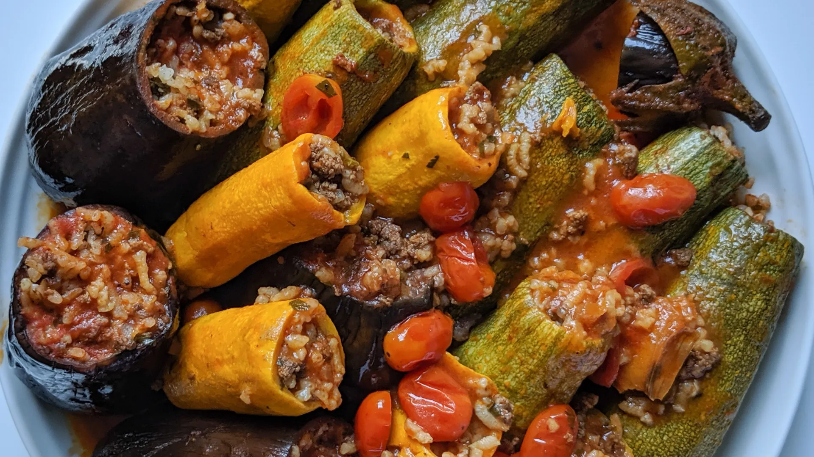

Squash and eggplant stuffed with a savoury and herbaceous meat and
rice mixture then simmered in a rich tomato sauce.

Course: Dinner, Main Course. Cuisine: Egyptian, Middle Eastern
-
assorted veggies, squash and small eggplants enough to snugly fill a
12-inch pot when standing. My pot fit about twelve zucchini and five
eggplants
- kosher salt
- 1 lb ground meat beef or lamb
- 1 small onion minced
- black and white pepper
- 1 tsp allspice
- 1 tsp coriander
- pinch cardamom
- pinch Aleppo pepper
- 1 cup medium or short grain rice washed
-
1 cup mixed minced fresh herbs I used half parsley, half cilantro,
dill is a common choice as well
- olive oil
- 2 tbs olive oil
- 3-4 cloves garlic minced
- 5 tbsp tomato paste
- 6 cups water
-
Cut the tops of the veggies and hollow them out using a zucchini
corer.
-
Sprinkle liberally with kosher salt and set aside. The salt will
draw moisture out of the veggies.
-
In a hot pan with some oil, saute ground meat with spices until only
cooked half-way. Add chopped onion and allow to soften then remove
from heat.
- In a small bowl, mix the meat with rice and fresh herbs.
- Shake off the water that was drawn out of your veggies.
-
If using eggplant, sear the skins in the pan you cooked the meat in.
-
Stand veggies upright in a pot that holds them snugly. You can tuck
onion quarters, garlic or other aromatics between to fill gaps and
add flavour.
-
Using fingers or a small spoon, drop the stuffing in. Don't jam it
in too tightly, the rice needs room to expand.
-
Heat up some olive oil in a small sauce pan and saute garlic for a
few minutes, then add tomato paste. Saute 4-5 minutes.
-
Add water and plenty of salt and pepper. Taste it. It should be
assertively seasoned.
-
Pour sauce over the veggies until they are covered about 3/4 of the
way.
-
Bring to a boil, turn down to medium heat and cook covered for about
45 minutes. Let stand for 15 minutes afterwards.
- Serve hot with sauce spooned over and yogurt on top.
It is difficult to give an exact number of veggies that you can fill
with this amount of stuffing, as this is affected by many variables
such as the size of your veggies, the manner in which they are stuffed
etc. For the photographed recipes I actually had the perfect amount of
stuffing for those veggies. It is common to have left over veggies or
stuffing. Left over stuffing can be cooked separately as you would
cook rice, for an herbed meat and rice dish. You could also freeze
excess for later use. Finely minced tomato can also be added to the
stuffing.